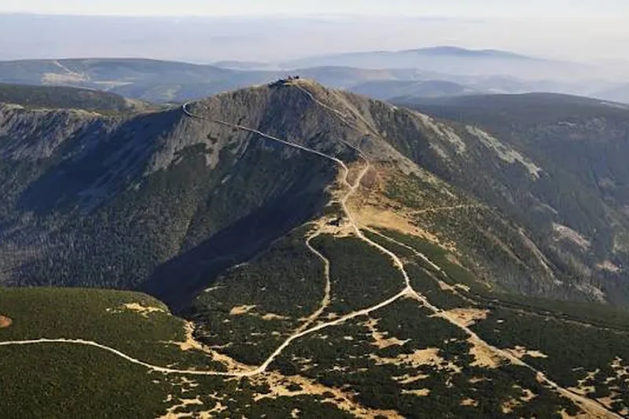
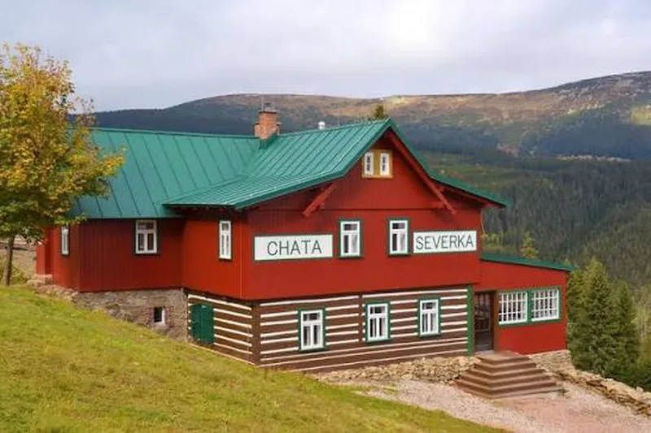
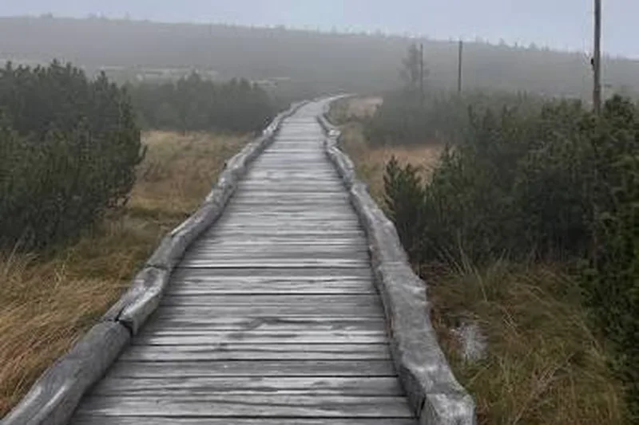

Výstup na Sněžku z Pece pod Sněžkou
Jak zdolat nejvyšší horu Česka pěšky a bez stresu
Publikováno , autor Adam Rosenberger

Proč jít na Sněžku
Sněžka leží v Krkonoších na hranici s Polskem. Měří 1603 metrů nad mořem a je to nejvyšší hora České republiky. Za hezkého počasí je z vrcholu vidět skoro celé Krkonoše a kus Polska. Každý rok sem vyjde několik set tisíc lidí, takže jde o jednu z nejnavštěvovanějších hor u nás.
Na vrcholu je poštovna, polská meteorologická observatoř a kaple svatého Vavřince. Kdo nechce jít pěšky, může jet lanovkou, ale pěší výstup je mnohem lepší zážitek.
Trasa z Pece pod Sněžkou
Nejoblíbenější výchozí bod je Pec pod Sněžkou. Odsud vede trasa přes Obří důl, což je ledovcové údolí se strmými svahy. Cesta je dlouhá asi 7 kilometrů a převýšení je skoro 800 metrů. Počítejte se třemi až čtyřmi hodinami nahoru.

Poslední úsek z Obřího sedla na vrchol je nejnáročnější. Cesta je kamenitá a dost fouká. Tady se vyplatí mít pevné boty a větrovku, i když je dole teplo.
Kde se zastavit
Cestou je několik horských bud, kde si můžete dát polévku nebo čaj. Nejznámější je Luční bouda, nejstarší horská bouda v Krkonoších. Nachází se kousek od Sněžky na Bílé louce.

Co si vzít s sebou
Na horách se počasí mění rychle. I v létě může být na vrcholu kolem 5 °C a silný vítr. Doporučujeme vzít si:
- pevné turistické boty
- větrovku nebo nepromokavou bundu
- čepici a rukavice (i v létě)
- dost vody a něco k jídlu
- mapu nebo mobil se staženou offline mapou

Bezpečnost a počasí
Před cestou se vždy podívejte na předpověď počasí a na stránky HS. Za mlhy se dá na hřebenech snadno ztratit, proto se držte značených cest. V zimě hrozí na svazích Sněžky laviny, takže některé cesty bývají zavřené.

Pokud se něco stane, volejte číslo 1210 (Horská služba) nebo 112.
Závěr
Výstup na Sněžku zvládne skoro každý, kdo má trochu kondice. Stačí vyrazit brzo ráno, mít dobré boty a sledovat počasí. Odměnou vám bude výhled, na který nezapomenete.
Zdroj textu: text vygenerován pomocí AI (Claude) a upraven autorem. Fotografie jsou ilustrační.